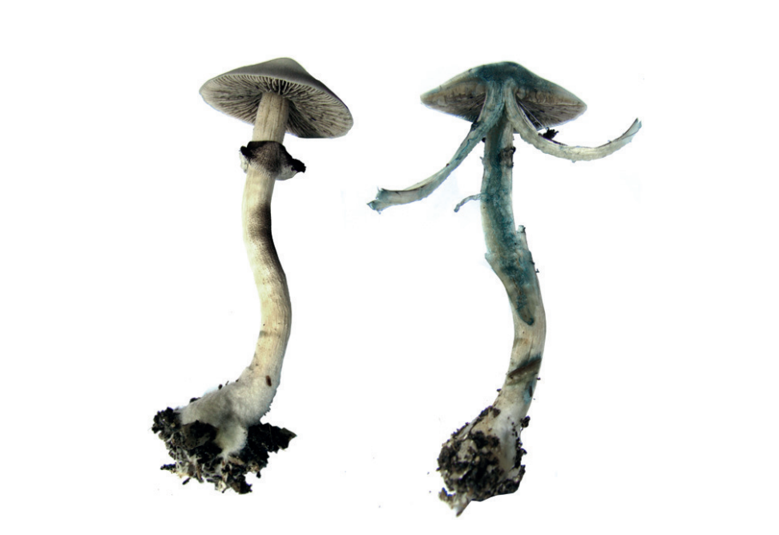
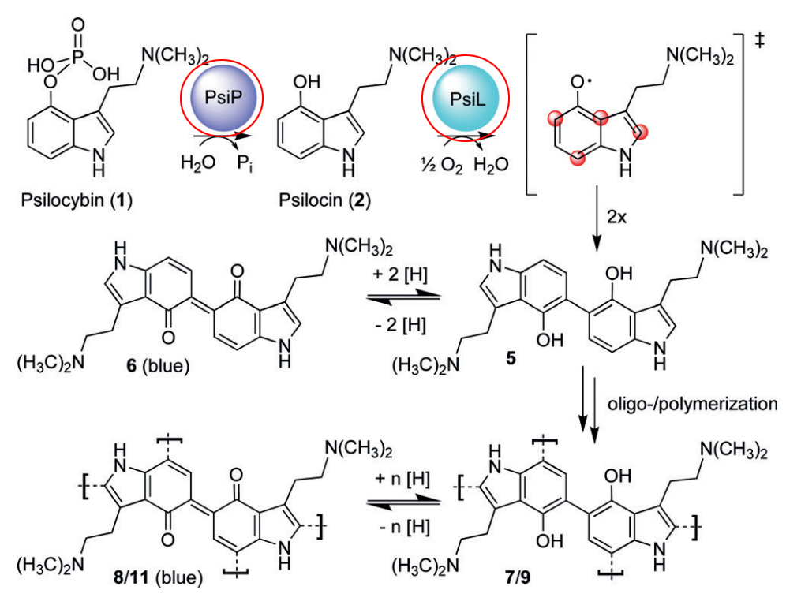
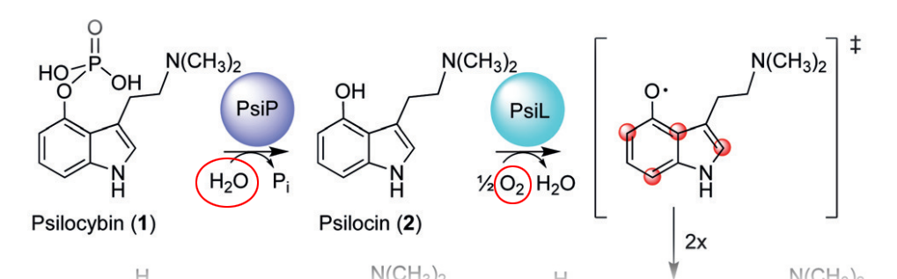
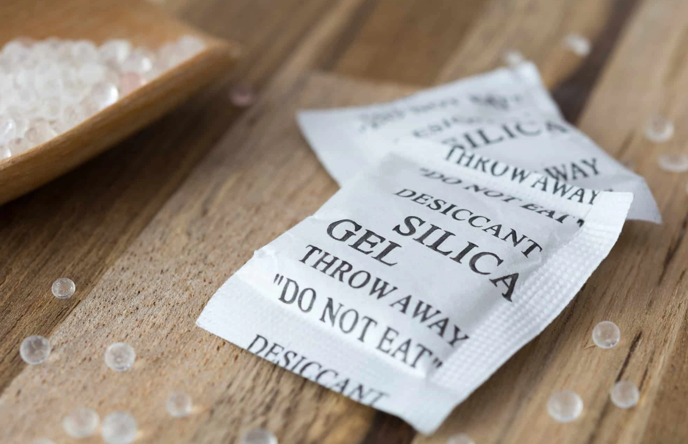
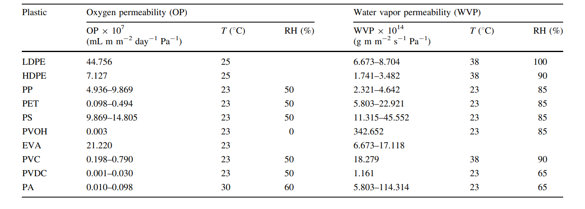
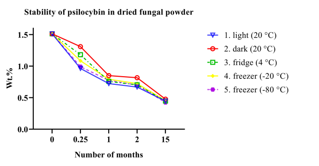
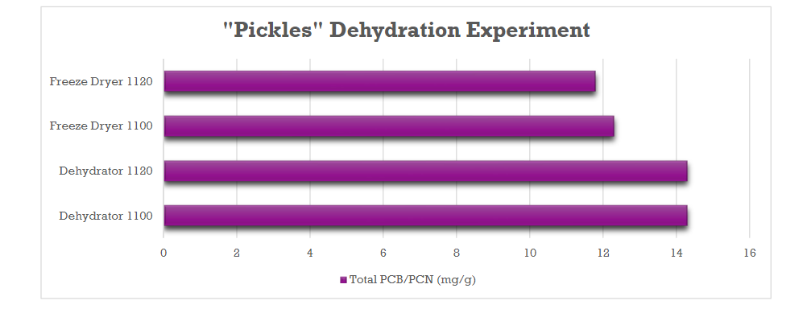

The active compound in psychedelic mushrooms, psilocybin, degrades over time. Obviously, this is very annoying for anyone wishing to store their mushrooms long-term without potency loss. To figure out the best method to prevent this degradation, we'll need to know what causes psilocybin to degrade.
Degradation mechanism
When psilocybin degrades, it is first converted to psilocin. Compared to psilocybin, psilocin is very unstable and decomposes extremely quickly. While psilocin is the bioactive form of psilocybin1, it is so unstable that it's usually not present in large amounts in the mushroom. The famous blue bruising of psychedelic mushrooms is a result of psilocin rapidly oxidizing into inactive blue dye.
So we want to do two things,
- prevent psilocybin from converting to psilocin, and
- prevent psilocin from decomposing into useless compounds.
In live psilocybin mushrooms, there are enzymes that catalyze those reactions.
However, we know that psilocybin still degrades in dried mushrooms. This means that the reaction still takes place without the enzymes (albeit at a slower pace). So what can we do?
Degradation prevention
First of all, it's important to fully dehydrate harvested mushrooms. Not only would that make sure the enzymes aren't active, but it'll limit the two core inputs to the degradation reactions: water and oxygen.
Water can be minimized by, again, properly dehydrating harvested mushrooms, and storing them in airtight containers. But we can also take a trick out of the snack food industry and use silica gel packets.
What about oxygen? Obviously, the airtight containers will help. But the material of the container is important, too. Some types of plastic are more permeable to gases than others.
Since we're looking to minimize oxygen and water vapor, limiting permeability is important. This is why you never want to store mushrooms in Ziploc bags, because those bags are made of LDPE, a relatively permeable material. Instead, use glass, which has negigible amount of gas permeability.
Assuming you're now using glass containers and silica gel packets, the last thing to ensure is that you keep the mushrooms out of heat and light. Heat and UV of universal reaction catalysts, so find a cool, dark place.
But... what about the freezer?
One of the most annoying things about psilocybin degradation is that there's so little scientific literature about it. There is literally one (1) paper that principally investigates this, and it's been cited to death across mushroom forums as a source of truth.
In the paper, there's one conclusion that intuitively does not make sense: psilocybin degrades faster under freezing temperatures compared to room temperature.
In theory, this shouldn't be true. The lower the temperature, the lower the rate of reactions -- this is universally true, it's why food in the refrigerator lasts longer, and food in the freezer lasts almost indefinitely. So what went wrong?
It could be incomplete drying. When cells still have water in them, they burst when frozen due to the expansion of ice crystals, which exposes more of the psilocybin to oxygen and water. (It's also why long-term preservation of live fungi use cryoprotectants like glycerol). Incomplete drying is actually a very easy mistake to make, especially when drying large mushrooms. The common advice for drying, "until you can snap it like a cracker", is subjective, and even using a scale to make ensure no further weight change is... inexact.
But my main issue with the "don't freeze" conclusion is that they used powdered samples. You should never grind up dried mushrooms if you intend to store them because the physical abrasion and increased surface area will lead to extremely fast degradation. That being said, they had no choice. In order to do a controlled experiment, they needed to make sure the samples were homogenous, and since psilocybin distribution within a mushroom varies wildly, they were forced to grind them up. Unfortunately, this also means that their experiment doesn't accurately replicate how people would properly store their mushrooms.
So, I'd say dismiss the conclusion and feel free to sealed dried mushrooms in the freezer.2
Advanced techniques
Enzymes?
A paper on genetically engineering yeast to produce psilocybin tried to deal with the issue of psilocybin degradation by adding an enzyme which does the opposite conversion: psilocin back into psilocybin. Sadly, it turned out to be unsuccessful.
While this psilocybin-psilocin equilibrium reaction is driven on one side by enzymatic or spontaneous degradation, it is assumed that conversion of psilocin back to psilocybin is mediated by PcPsiK. Indeed (Fricke et al., 2017) showed that PcPsiK could phosphorylate both 4-hydroxytryptamine and psilocin in vitro. During fed-batch fermentation of the top psilocybin producing strain ST9482 a decrease in psilocin and corresponding increase in psilocybin titer was observed after 139h (Fig. 5) suggesting that in vivo PcPsiK is catalyzing the conversion of psilocin back to psilocybin. However, the detection of dephosphorylated versions of baeocystin (norpsilocin) and aeruginascin (Fig. 6), and the observation that introduction of several copies of PcpsiK made no statistically significant change in psilocybin or psilocin titers (Supplementary Table 4), suggests that (de)phosphorylation of these molecules may be more complex than initially thought.
Obviously, this is for a bioreactor environment and not long-term storage (and it also didn't work), but the implications are interesting.
Aqueous extraction?
There is a patent on psilocybin and psilocin extraction, and like all patents, it is very convoluted to read (maybe deliberately so). There are some interesting parts where they try to deal with the problem of the aqueous extracts degrading.
[265] Step 1810 involves extracting a psychoactive alkaloid from the dried powdered biomass with an acidified solvent or a basified solvent to obtain a psychoactive alkaloid liquid with a specific pH, wherein the specific pH is lower than 3.5 or greater than 10.5. Between pH 3.5 and pH 10.5, the conditions are such that psilocybin is readily converted to psilocin, and psilocin is converted to the quinoid dimer, which is completely inactive.
Seems like the higher pH retains psilocybin:
[273] In another embodiment, ...when the psychoactive alkaloid liquid has a pH greater than 10.5 during the extraction step, the desired amount of the phosphorylated psychoactive alkaloid is 100% by weight... The desired amount of the dephosphorylated psychoactive alkaloid is 0% by weight...
... and the lower pH retains psilocin:
[274] In yet another embodiment, when the psychoactive alkaloid liquid has a pH lower than 3.5 during the extraction step, the desired amount of the phosphorylated psychoactive alkaloid is 0% by weight... The desired amount of the dephosphorylated psychoactive alkaloid is 100% by weight... Even with neutral hydro-ethanol extraction, a large portion of psilocybin may be converted to psilocin. However, the low pH environment (<3.5) protects the psilocin from oxidation.
However, it's a bit confusing because they then say that the ideal extraction for psilocybin is 5% acetic acid and 100% methanol (as a solvent), which is under 3.5 pH. Contradiction? There are other tidbits in the patent about how maybe phorphorylation can be halted by creating an environment where the enzymes are deactivated, but it's very wishy washy.
Freeze drying?
Many people claim that when drying fresh mushrooms, freeze drying (lyophilization) retains potency much better than hot air drying. While it does intuitively make sense, I think the difference is relatively small compared to good storage techniques.
There is an HPLC report3 where someone sent in mushrooms split in half, such that one split was dehydrated via hot air and the other via freeze drying. The results were actually worse for freeze-drying. However, this is just a single datapoint.
-
Psilocybin is a prodrug, which means it's biologically inactive. When it's consumed, it's converted into psilocin in the gut, and psilocin causes the psychoactive effects. ↩
-
There are many anecdotal reports of people keeping dried mushrooms in the freezer with little to no potency loss. While it's a sin to believe random claims like these, strong anecdotal evidence may hold up against a single published datapoint. ↩
-
There is actually an insane wealth of analysis ("how much psilocybin is in this mushroom?") from MagicMyco's lab journal. It's one of the few times where there's more data than I can read. ↩